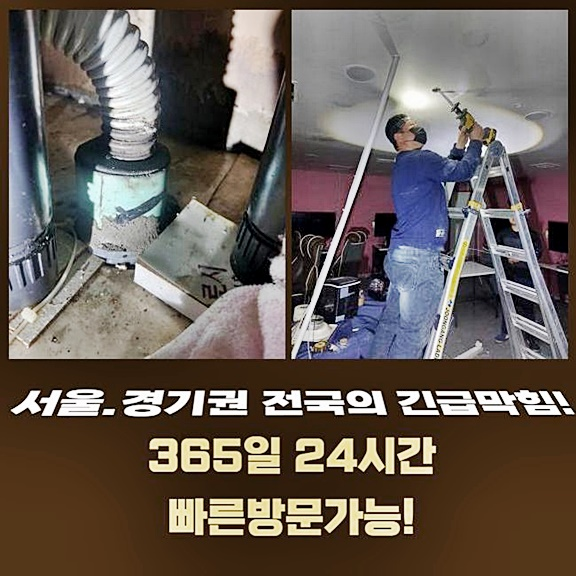
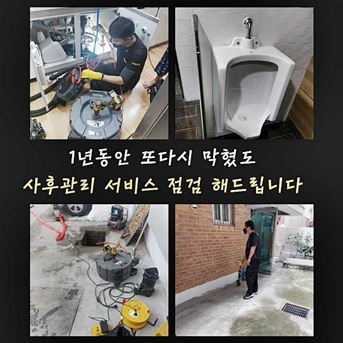
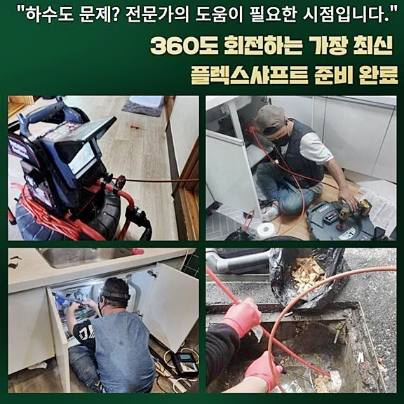
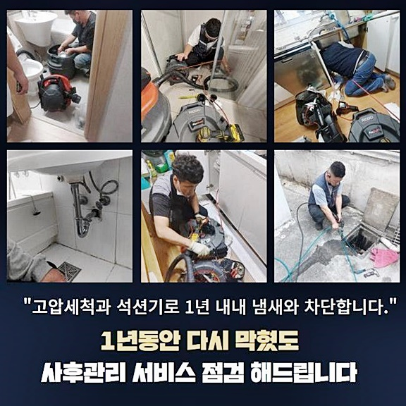
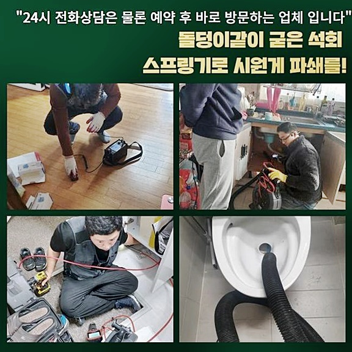
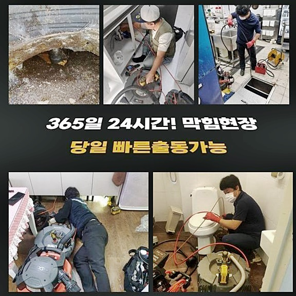
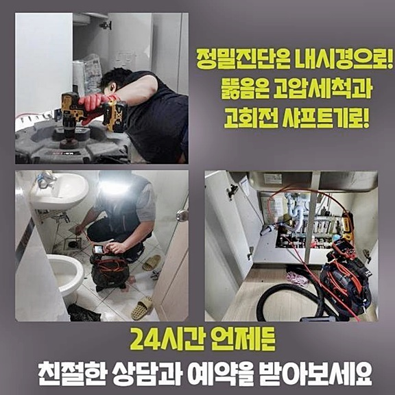

🏠 인천 화평동싱크대뚫음 창영동 횡주관청소 해결방법
용인시 처인구 배관막힘 전문 시공 후기

📋 작업 개요
- 위치: 용인시 처인구, 수원시 영통구, 화성시 동탄
- 서비스 유형: 배관막힘, 고압세척, 내시경점검
- 작업 일시:
- 업체명: 하수구수사대 (010-5615-2118)
🔍 문제 상황
인천 화평동싱크대뚫음 창영동 횡주관청소 해결방법
배수구가 심각하게 막히게 되었다면 흔한 기기로는 처리하기 어려워요
꽉 막힌 배관은 평범하게 힘으로 뚫기만 해서는 해결이 어렵기 때문에 전문성을 가진 처리가 필요합니다
배관이 꽉 막힌다면 물이 조금도 흘러가지 않게 되므로 가정집이나 사무실에서 심각한 문제를 야기할 수 있어요
그러므로 이런 상황을 동시에 확실히 수리해 줄 전문기술자를 불러온 후 해결하는게 필수입니다
하수관로 막힘사태는 늦어지면 늦어질수록 해결이 힘들어질 수 있으니 정확하고 즉각적인 조치들이 필수입니다
성의없이 대강 뚫었다가는 결국 곧 해당 문제현상을 다시 경험 할 가능성이 높아요
이런 반복되는 상황들은 시간과 수리비를 무색하게 만들며 더 큰 피해를 발생시킵니다
이번 건은 하수배관에 막힘이 일어났다며 문의를 하셨습니다
의뢰자분은 하수배관 고압 물세척 가격에 대하여 걱정하셨기 때문에 사태를 점검한 후 답을 드렸습니다
수리비 견적은 매우 신중하게 생각하시는 검토항목이라서 저희는 의뢰인의 재정 범위 내에서 맞춤형 솔루션을 제공할 수 있게 힘쓰고 있습니다
천만다행으로 예상하고 있던 재정범위 내에서 수행될 수 있다고 판단하셨기 때문에 시공을 맡기기로 선택하였습니다
하수관이 막히는 사태가 발생하게 되면 무엇보다 왜 이러한 문제가 나타났는지 알아봐야 합니다
간단하게 외부의 현상들을 처리하는게 아니라 근본원인을 규명하는 것이 중요합니다
문제를 바로잡으려면 어느 방법을 시도할 것인지 계획해보고 착수해야합니다
사태의 이유를 분명히 파악하지 않고 임시적으로 처리하게 된다면 같은 유형의 문제들이 재발할 위험이 큽니다
이런 땐 막혔다고 확인된 곳만 해결한다고 해서 문제들이 해결되는 것이라고 볼 수 없어요

🔎 원인 분석
💡 전문가 진단: 정밀 진단 장비를 사용하여 슬러지의 고착 여부를 판명하고 타격/세척 작업을 실시했습니다.
배수구의 형태와 현장의 문제요인을 전체적으로 검토하여 최상의 해결책들을 적용해야 합니다
첫 번째층에 저온저장소와 하수관이 이어져 있는 구조였는데 맨홀 내부가 막히게 되면서 이곳이 역류하게 되며 난리가 났습니다
역류가 발생하면 생활에 지장을 야기할뿐더러 건강상의 문제와 금전적 피해들을 발생시킬 수 있어요
이용자분께 앞뒤 사정 설명을 듣고나서 막힘을 해결하려고 기기를 가져오게 되었습니다
준설차에서 기구들을 준비하고 가장 낮은층으로 가서 상태들을 확인하였습니다
상황이 급박하더라도 왜 이렇게 되었는지 원인을 알고 실행하여야 합니다
장애가 나타난 이유를 확실히 조사해야 성공적인 해결을 할 수 있습니다
내시경 장치를 통해 검사를 해보니 맨홀 내부에 물이 흐르지 않았습니다
이것은 특정지점이 막힘이 있다는 것을 나타냅니다 물이 통과하지 않으면 물이 차 올라서 마침내 역류가 일어납니다
문제는 오수받이가 이곳저곳 있기때문에 문제지점이 어느곳인지 확인이 힘들었어요
이럴때는 차례로 상황을 거슬러 올라가며 원인을 파악합니다
이러한 현장에서는 되짚어가면서 고온수 고압 세척을 통해 문제해결이 가능해요
고온수 고압 세척은 강한 수압으로 하수관 안쪽의 불순물을 정리하는 적합한 방법입니다
준설 시공차에서 가지고 온 고압고압력의 노즐을 활용해 오염물을 치우기 시작하였습니다
고압분사기를 이용해 강력한 수압으로 찌꺼기를 분쇄하고 청소합니다
역류현상이 일어날만큼 꽉 막혀버린 상황이라서 수차례 시도했지만 해결하기가 간단하지 않았죠
단단하게 막힌 오염물은 강한 수압과 되풀이되는 작업을 통해 해결할 수 있어요
저희팀은 지속적인 작업으로 끝내 찌꺼기를 없앨 수 있었습니다

🔧 작업 과정
꾸준한 시도를 통해 결과적으로 막힌부분을 뚫어낼 수 있었어요
기름찌꺼기와 오염물들이 많이 밀려나왔어요
이런 오염물은 하수관을 종종 막히게 만드는 주요한 이유입니다
이용자분께서 이야기하시는데 건물을 세운 이래로 한 순간도 막힌 적이 없었기에 그냥 지내왔다고 하셨어요
오랫동안 쌓인 오염물은 결론적으로는 큰 문제상황을 유발합니다
장기간 퇴적된 불순물이 뭉쳐져서 역류하게 된 것입니다
쌓여있던 불순물과 기름덩이들은 물 배출을 차단하고 마지막에는 하수를 역류시킵니다
간간히 내시경 기기를 활용해 배수구 막힌 부분을 파악했습니다
내시경 기기는 하수도 속의 상황들을 정밀하게 점검할 수 있는 필수장치입니다
큰 덩어리들은 간단히 제거가 되는데 하수관에 붙어있는 오염물은 잘못 처리할 경우 배관에 손상이 가므로 조심히 제거하였습니다
배수로에 충격이 가해지면 더 큰 손상이 생길 수 있으므로 신경을 써야합니다
저희 전문가들은 확실한 조치를 통해 적절한 가격으로 배수구 고압세척작업을 실시하고 있어요
꼼꼼한 조치와 적정 수리비로 소비자 만족감을 올리는 핵심 요인입니다
2층의 입상배관과 가장 낮은층에 하수관을 체크해보니 키친타올들이 그득했습니다
키친타올의 경우 하수관에 큰 고장을 야기할 수 있는 가장 큰 이유 중 하나이기도합니다
키친타올의 경우 하수관에 넣게 되면 고장이나니 고객님께 신경 써주실것을 부탁했습니다
키친타올은 물속에서도 분해되지 않기 때문에 배수구를 흔히 막아버리게 됩니다
모든 공정이 마치고 난 후 내시경 카메라 장비를 활용하여 다시 한번 배관 내부를 체크했습니다
시공을 마치고 나서도 내부의 모습을 살펴보는건 장애가 말끔하게 해소되었는지 체크하는 중대한 단계입니다
오염물이 모두 청소되어 배수구가 순조로이 배수됨을 파악했습니다
배수관이 원활히 물이 흐르면 다시는 물이 역류되지 않습니다
의뢰인분께도 작업 전과 후의 상황을 보여드리고 앞으로는 잘 관리하겠다는 이야기를 들었어요
의뢰자분께 수리 전후의 상태를 알림으로써 신뢰감을 얻었습니다
끝으로 문제였던 냉장창고에 들어가 역류되었던 물이 배수되었는지 검사한 후 바닥면을 청결하게 청소해드렸습니다
정리정돈은 시공의 마지막 절차로 수리의뢰를 완전히 해결해드리는 것에 큰 역할을 합니다
환기시스템을 활용해 냄새를 제거하며 작업들을 완료했습니다
불쾌한냄새 제거과정은 깨끗한 공간을 만드는데 있어 중요한 사항입니다
배수관 막힘은 신속히 처리해야 하는 중대한 사안입니다


✅ 작업 완료
하수도 막힘현상은 방관하면 더 큰 이상이 나타날 수 있어요
근래 배관에 이상이 있다면 언제나 문의하신다면 특화된 기기로 즉시 처리하여 드리고 있습니다
장애가 생겼을 때 빠른조치는 이후 나타날 손실들을 방지할 수 있습니다
해당 사례의 고압 세정비용도 적절하게 책정했어요
적절한 금액으로 고객님께 신뢰도를 주는 필수 요소들입니다
해당 사례만큼 복잡한 사안외에 작은 문제라 할지라도 전문기술자의 지원이 필요하다면 언제 어느때나 저희 기술자에게 상담 요청가능합니다
전문팀의 기술은 문제현상을 빠르면서도 분명하게 처리할때 필요로 합니다 적정 요금으로 효과적이고 명확하게 막힘이슈를 개선해드릴게요
걱정 없이 상담요청해주세요 빠르고 확실한 상담은 고객님의 만족을 위한 핵심 요인입니다




⚠️ 하수구 배관 막힘 예방 및 관리 가이드
- ✅ 머리카락, 비닐, 물티슈 등 물에 분해되지 않는 이물질은 절대 흘려보내지 마세요.
- ✅ 기름기 많은 식기는 설거지 전 키친타올로 먼저 기름때를 닦아내세요.
- ✅ 주기적으로 배수구에 뜨거운 물을 가득 부어주어 유지방 고착을 방지하세요.
- ✅ 작업 후 1년 이내 재발 시 무상 A/S 보증 서비스를 제공합니다.
💡 핵심 정리
- 확실한 장비 작업(내시경 점검 및 샤프트 스케일링)으로 원인을 뿌리 뽑습니다.
- 작업 후 1년 이내에 동일한 부위 재발 시 100% 무상 A/S 서비스를 보장합니다.
- 서울 · 경기 · 인천 전 지역에 24시간 언제든 긴급 출동할 수 있도록 항시 대기 중입니다.
❓ 자주 묻는 질문 (FAQ)
🚨 용인시 처인구 배관막힘 문제로 고민이신가요?
정확한 원인 진단과 확실한 시공으로 재발 없는 해결을 약속드립니다.
24시간 긴급 출동 | 서울 · 경기 · 인천 전지역 | 1년 내 재발 시 무상 A/S